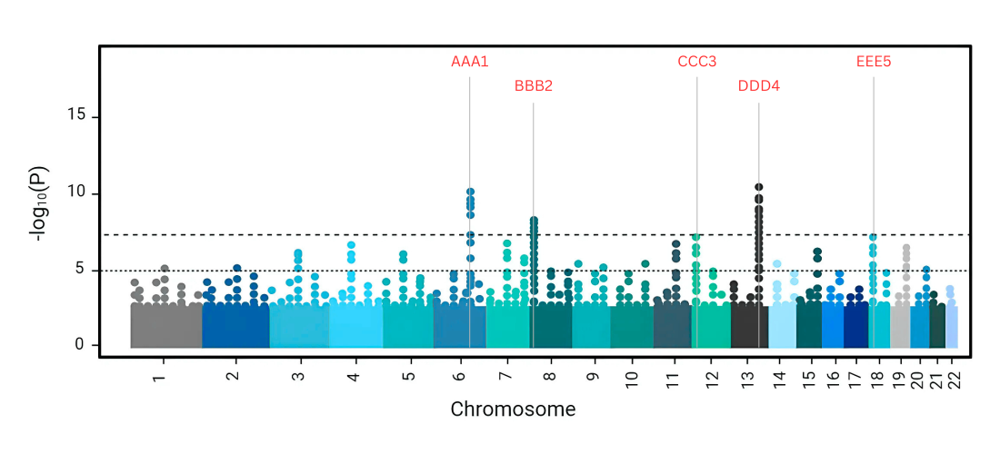
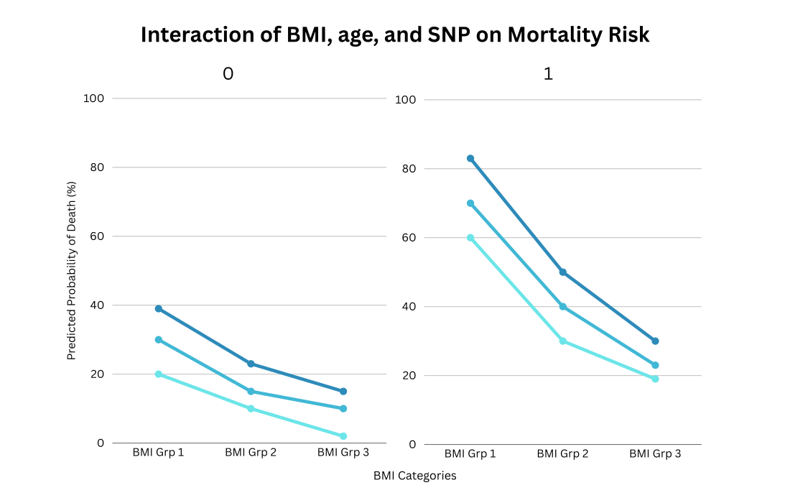

Role
Timeline
Tools Used
Research Scientist at UPenn
May-August 2025
PLINK, Bioconductor (biomaRt), glm(), R
Background
Mycobacterium tuberculosis (Mtb) exposure generates diverse clinical outcomes due to complex host-pathogen interactions and global endemicity. Understanding the genetic factors underlying poor tuberculosis (TB) prognosis and mortality may inform host-directed therapies targeting the pulmonary microenvironment, ultimately reducing the risk of poor prognosis and post-TB complications in disproportionately affected populations. We hypothesize that monocyte genes contain Mtb-specific responses that influence TB pathogenesis. Our research aims to identify transcriptional signatures and genetic variants associated with TB and post-TB lung disease using whole genome profiles and clinical data. Based on prior research, we have identified Mtb-dependent expression quantitative trait loci (eQTLs) associated with cytokine expression and clinical resistance to tuberculin skin tests and interferon-gamma release assays.
This project investigates whole-genome profiles of over 240 patients in India, where TB remains prevalent, leveraging previously identified eQTLs to investigate host genetic influences on disease progression.
This project is part of an ongoing unpublished study investigating genetic and clinical predictors of TB pathogenesis under the supervision of Dr. Hyejeong Hong. Data access is restricted; all visualizations here are illustrative.
Below is an outline of the process and tools used at each step.

I used biomaRt in R to annotate significant SNPs by mapping them to nearby genes to identify eQTLs of interest. From the GWAS dataset, I extracted relevant genotype and SNP data, and aligned it with clinical metadata by matching patient IDs to sample names. I then filtered the cohort to include only patients with 8-week follow-up data and removed missing values. After ensuring consistent formatting and data types, I categorized patients based on BMI and grouped them for downstream regression analysis. I built regression models using cleaned and restructured data, visualized the results with interaction plots and histograms using ggplot2, ggeffects, and sjPlot, and calculated confidence intervals and model coefficients. Final outputs, including summaries and plots, were exported as CSV files for reporting and publishing.
Example Manhattan plot of genomic data with significant SNPs outlined.

Example interaction plot of final visualized linear regression.
